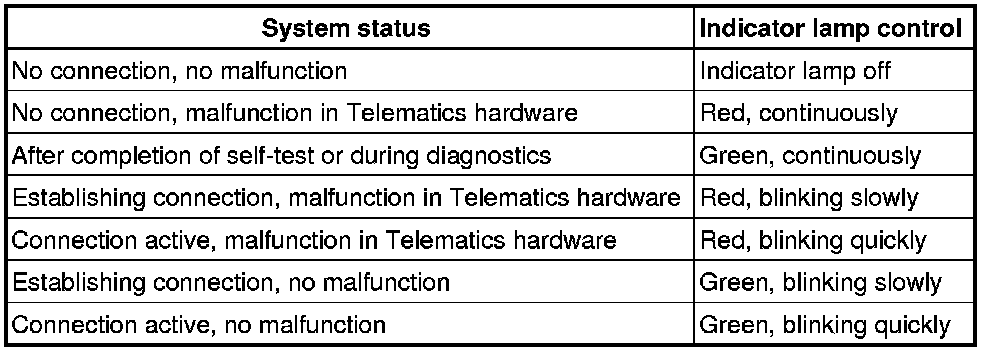

Initial Inspection and Diagnostic Overview
Telematics System
Troubleshooting
With a simple and quick test, conclusions can be drawn from performance of indicator lamp in control head.
Furthermore, malfunctions can be determined by messages of telematics system together with performance of indicator lamp.
This procedure does not substitute fault finding using --> Vehicle Diagnosis, Testing and Information System (VAS 5051) or Vehicle Diagnosis and Service System (VAS 5052), Guided Fault Finding..
Evaluating Performance Of Indicator Lamp In Control Head
LED indicator lamp is installed in control unit. LED indications are red or green, blinking quickly or slowly.
Depending on status of Telematics system, activation of indicator lamp with ignition switched on corresponds to the following table:

Further information:
• LED is off when "ignition is off".
• After ignition is switched on, self-check routine is performed in Telematics system. If no malfunctions were recognized, green LED lights up after approximately 15 seconds. System is now ready to send or receive calls. Green LED remains on when there is no signal received in certain areas.
• If green LED is slowly blinking, connection is initiated or in process.
• Red LED indicates malfunction during self-check or system has performed faulty function.
Evaluating Telematics System Messages In Conjunction With Performance Of Indicator Lamp
After pushing "OnStar" or "Emergency" button, following recorded message announces:"Connecting to OnStar", followed by progression tones. Normal connection time is 10 to 15 seconds. However, connection time can be up to three minutes, depending on reception conditions. Be patient.
LED lights green and following message can be heard:
• Message "Unable to contact OnStar", connection is interrupted.
• Message "OnStar request ended"
• Cellular network message is heard
• nothing happens
All of the preceding conditions indicate that signal from cellular network cannot be received properly.
Proceed as follows: Drive vehicle to more elevated or open area repeat connection attempt. Depending on local conditions, it is possible - and normal - that several connection attempts are necessary.
Malfunctioning antenna system of vehicle also affects connectivity. If necessary, perform fault finding with antenna system using Vehicle Diagnosis, Testing and Information System (VAS 5051) or Vehicle Diagnosis and Service System (VAS 5052) in mode "Guided Fault Finding".
If there is still no connection, note down Vehicle Identification Number (VIN) and customer data. Call "OnStar" service at the following number: 1-888-390-4050. Identify yourself to the Telematics call center advisor as a Volkswagen technician. Advisor will verify whether customer account is active. Further troubleshooting assistance may be given.
LED red, continuously:
Indicates fault on vehicle side. Proceed as follows:
Perform self-diagnosis using Vehicle Diagnosis, Testing and Information System (VAS 5051) or Vehicle Diagnosis and Service System (VAS 5052) in mode " Guided Fault Finding".
• In the event any Telematics button in control head are pressed either inadvertently or deliberately for longer than 15 seconds, self-diagnosis assumes a button is sticking. Red LED will light up and memory will store DTC " 01526 - mechanical malfunction". Make sure button are fully operable, erase DTC and inform customer.